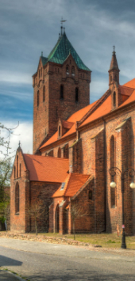
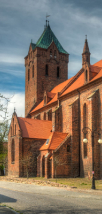
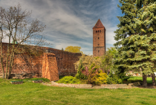
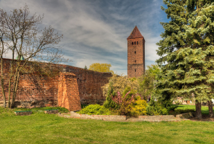

Ekspozeum - przystanek turystyczny
Winnica Parypa - szlak enoturystyki
Ratusz (punkt widokowy, izba tradycji)
Średniowieczne mury obronne
Baszta Piaskowa, Wieża Bramna Zachodnia i Wschodnia
Fosa Miejska, stawy - stary park
Neogotycki Spichlerz
Hetmańska - restauracja
Zabytkowe kamienice i domy
Kościół ewangelicki św. Mikołaja, k. XIV w.
Kościół pw. Świętej Trójcy, parafialny, w stylu barokowym
Nowy park miejski - fontanna, wzgórze krzyżowe, pomnik
Wzgórze Czarownic (Byczyna/Nasale)
Browar Miastolas - Kluczbork
Gród Rycerski - Kochłowice
Active-Time Paintball Byczyna
Jaśkowice - wieś
Wieś Tematyczna (Księstwo Wojsławickie)
Pałace - Gołkowice, Biskupice, Proślice, Gosław, Nasale, Roszkowice
Szlak Czarownic
Szlak Drewnianych Budowli Sakralnych - Biskupice, Jakubowice, Proślice, Gołkowice, Miechowa
Cmentarz komunalny w Byczynie, kaplica sw. Jadwigi, mogiła ks. Hermana Koellinga
Cmentarz żydowski pod Biskupicami
Kaplica ewangelicko-augsburska w Paruszowicach
Wycieczki jednodniowe
Szlak Czarownic
Wycieczki dwudniowe
To edukacyjna gra terenowa, która łączy w sobie elementy zabawy i nauki, poszukiwań skarbu i radości odkrywania! Na trasie questu poznacie historię bohatera, który przed wiekami wsławił się w Bitwie pod Byczyną.
To tu odbyła się słynna potyczka, w której wojska polskie zatrzymały armię arcyksięcia austriackiego. Waszym zadaniem podczas trasy questu będzie uważne czytanie wskazówek i wykonywanie zaplanowanych zadań. Zebrane litery utworzą hasło, które będzie niezbędne do odnalezienia skarbu.
Powodzenia!
To ponad 1000 lat historii Byczyny, które odkryjecie biorąc udział w grze terenowej. Przez chwilę możecie poczuć się, jak prawdziwi poszukiwacze przygód.
Trasa zbudowana jest z czterech wiodących tematów-ścieżek: Wiedzy, Miasta, Wojny i Ducha. Budowę trasy poprzedziło dogłębne, trwająca kilka miesięcy, poszukiwanie informacji dotyczących miasta, ludzi, wydarzeń oraz miejsc.
Gra oparta jest na karcie/mapie, karcie do gry i polega na poszukiwaniu skrytek z informacjami i wskazówkami. Każda ze skrytek oznaczona jest również współrzędnymi geograficznymi, co będzie nie lada gratką dla ludzi bawiących się w geocaching. Na trasie nie znajdziemy całości zebranych przez nas informacji, ale osoby zainteresowane będą je mogły odczytać, skanując QR kod z danej skrytki.
 

 
